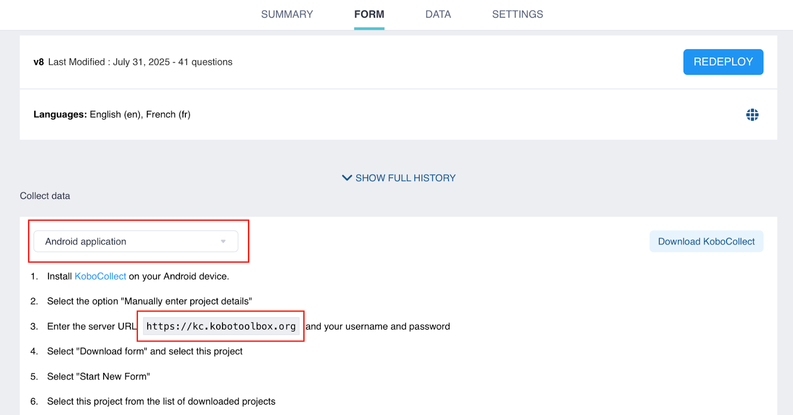

Search the knowledge base, browse our resources, and visit our forum for more detailed information
Read in English | Lire en français | اقرأ باللغة العربية Última actualización: 19 Sep 2025
KoboCollect es una aplicación gratuita y de código abierto de KoboToolbox diseñada para la recolección de datos en dispositivos móviles Android. Sus capacidades sin conexión y compatibilidad con la mayoría de los dispositivos Android la hacen ideal para el trabajo de campo.
Antes de usar KoboCollect, debes configurar una cuenta de KoboToolbox en el sitio web de KoboToolbox y desplegar formularios de recolección de datos.
Este artículo cubre cómo conectarse a KoboCollect para la recolección de datos. Para aprender más sobre la configuración de ajustes de KoboCollect y la recolección de datos con la aplicación, consulta Personalización de ajustes de KoboCollect y Recolección de datos usando KoboCollect.
La aplicación de Android de KoboCollect puede descargarse desde Google Play Store para dispositivos Android con versión 5 o superior.
Nota: Recomendamos usar la última versión de la aplicación (v2025.2), ya que incluye funcionalidades y correcciones de errores que no están disponibles en versiones anteriores.
Para recolectar datos con KoboCollect, debes configurar la aplicación de KoboCollect en tu dispositivo móvil para conectarte al servidor de KoboToolbox. Esto te permite descargar formularios desplegados desde KoboToolbox y enviar los datos recolectados de vuelta al servidor.
Para conectar KoboCollect al servidor de KoboToolbox, necesitarás tu URL de KoboCollect, tu nombre de usuario/a y tu contraseña. Después de la configuración manual inicial, puedes generar un código QR para configurar otros dispositivos.
Nota: En la aplicación de KoboCollect, las cuentas de usuario/a se llaman Proyectos.
Para configurar KoboCollect manualmente, necesitarás identificar tu URL de KoboCollect. Esta URL es específica para KoboCollect y difiere de la URL utilizada para acceder a tu cuenta de KoboToolbox.
Tu URL de KoboCollect depende del servidor de tu cuenta:
Servidor de KoboToolbox |
URL de KoboCollect |
|---|---|
Servidor Global |
https://kc.kobotoolbox.org/ |
Servidor con sede en la Unión Europea |
https://kc-eu.kobotoolbox.org/ |
Servidor privado |
Única para cada organización |
También puedes encontrar la URL de KoboCollect en la plataforma de KoboToolbox. Ve a la ventana FORMULARIO de tu proyecto y selecciona Aplicación de Android del menú desplegable Recolectar datos. La URL de KoboCollect se mostrará en el paso 3.

Una vez que hayas identificado tu URL de KoboCollect, sigue estos pasos para configurar la conexión al servidor:
Abre la aplicación de KoboCollect.
Selecciona Entrar los detalles del proyecto manualmente.
Ingresa la URL de KoboCollect, tu nombre de usuario/a y contraseña.
Toca Agregar.
Cuando la configuración esté completa, se mostrará el menú principal.
Usar un código QR configura eficientemente KoboCollect en múltiples dispositivos con los mismos ajustes de servidor (URL de KoboCollect, nombre de usuario/a, contraseña y ajustes de configuración del proyecto). Esto puede ser útil para evitar repetir pasos manuales o para configurar dispositivos de encuestadores/as sin compartir contraseñas de cuenta.
Nota: Para usar el método de código QR, primero debes configurar manualmente un dispositivo y luego copiar el código QR generado a los otros dispositivos.
Para acceder a tu código QR:
Ve al menú Proyectos y selecciona el proyecto que deseas copiar.
Toca Ajustes.
Selecciona Manejo de Proyecto.
Toca Reconfigurar con Código QR.
Elige Código QR. Tu código QR aparecerá en la pantalla.
Toma una captura de pantalla del código QR para compartirlo y configurar otros dispositivos. También puedes regresar a este menú en cualquier momento para acceder al código QR nuevamente.
Para configurar otros dispositivos usando el código QR:
Abre KoboCollect en el dispositivo que deseas configurar.
Toca Configurar con Código QR.
Escanea un código QR con la cámara del dispositivo, o toca los tres puntos en la esquina superior derecha y selecciona Importar código QR para usar una captura de pantalla guardada en tu dispositivo.
Si la configuración es exitosa, la aplicación se configurará automáticamente.
Nota: El código QR contiene las credenciales de tu cuenta, incluyendo tu contraseña. Cualquier persona que lo escanee tendrá los mismos permisos de acceso que la cuenta desde la cual fue generado. Si solo quieres que alguien recolecte datos (por ejemplo, un/a encuestador/a), asegúrate de que la cuenta utilizada para generar el código QR no tenga permisos para ver, editar o eliminar datos. Para mantener tus datos seguros, evita compartir códigos QR de cuentas con acceso completo.
Los/as usuarios/as pueden conectar múltiples cuentas de KoboToolbox y cambiar fácilmente entre diferentes proyectos dentro de la misma aplicación de KoboCollect, independientemente de si están en el mismo servidor o en servidores diferentes.
Para configurar proyectos adicionales en KoboCollect:
Toca el ícono de Proyecto ubicado en la esquina superior derecha.
En el menú Proyectos, toca Agregar proyecto.
Configura un nuevo proyecto usando el método manual o escaneando un código QR.
Cuando la configuración esté completa, se mostrará el menú principal.
Toca el ícono de Proyecto para abrir el menú. Ambos proyectos ahora deberían ser visibles.
Se pueden agregar proyectos adicionales repitiendo el mismo proceso. El proyecto activo se listará primero en el menú Proyectos. Para cambiar a un proyecto diferente, simplemente toca su ícono.
Para aprender más sobre cómo cambiar la forma en que se muestran los proyectos para facilitar su reconocimiento y cambio, consulta Ajustes de visualización de proyectos.
También es posible acceder a proyectos en KoboCollect sin una contraseña. Esto es útil para proyectos con muchos/as encuestadores/as, ya que evita la necesidad de crear cuentas individuales o compartir credenciales.
Nota: Este enfoque requiere habilitar "Permitir envíos a este formulario sin un nombre de usuario/a y contraseña" para tus formularios. Para aprender más sobre los ajustes de compartir a nivel de proyecto, consulta Compartir proyectos con ajustes a nivel de proyecto.
Para conectarse a KoboCollect sin autenticación:
Habilita «Permitir envíos a este formulario sin un nombre de usuario/a y contraseña» para tus formularios.
[Opcional] Crea una cuenta dedicada de KoboToolbox para recolectores/as de datos y comparte tus formularios con esta cuenta.
Conéctate a KoboCollect usando las siguientes credenciales:
URL: URL de KoboCollect seguida del nombre de usuario/a de la cuenta (https://[kobocollect_url]/[username])
Nombre de usuario/a: (Dejar en blanco)
Contraseña: (Dejar en blanco)
Este enfoque permite a los/as usuarios/as descargar y enviar datos a cualquier formulario compartido con username que no requiera autenticación.
Para diferenciar encuestadores/as y rastrear envíos, puedes pedir a los/as encuestadores/as que ingresen un nombre de usuario/a personalizado, número de teléfono y dirección de correo electrónico en los ajustes de identidad de usuario/a y dispositivo.
Nota: Este enfoque puede ser útil cuando tu cuenta usa autenticación de dos factores, ya que no podrás descargar formularios o enviar datos usando el método normal.
Did you find what you were looking for? Was the information clear? Was anything missing?
Share your feedback to help us improve this article!
KoboToolbox is maintained by Kobo Inc.